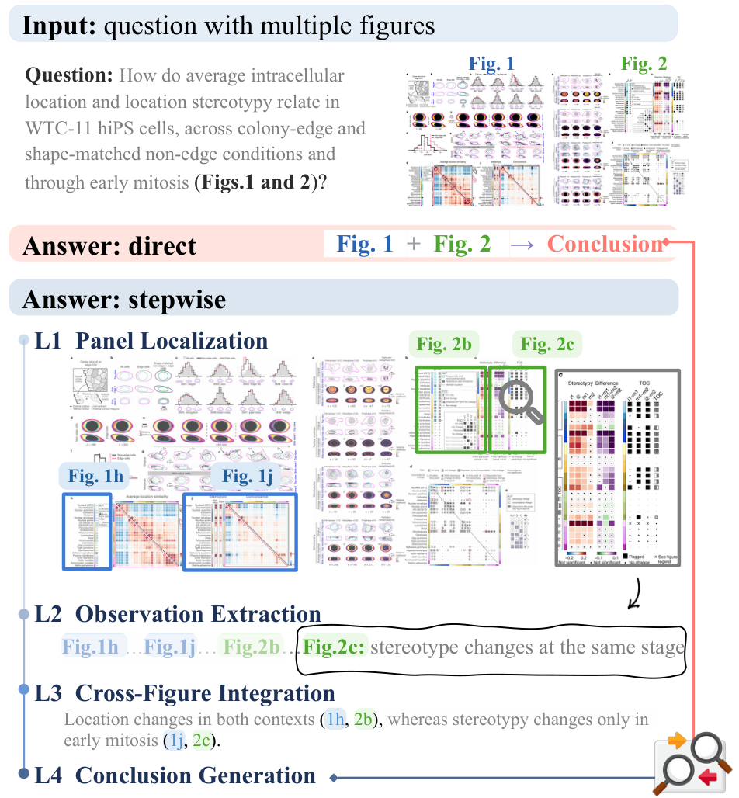

View figureSubmitted to CVPR 2027
BioThread: Tracing Claim–Evidence Reasoning in Biomedical Scientific Figures
We introduce BioThread to evaluate whether vision-language models can interpret biomedical experimental figures, integrate evidence across experiments, and draw scientifically supported conclusions. We further develop an evidence-grounded agent to improve scientific reasoning, with the broader goal of enabling AI agents to support biological research.